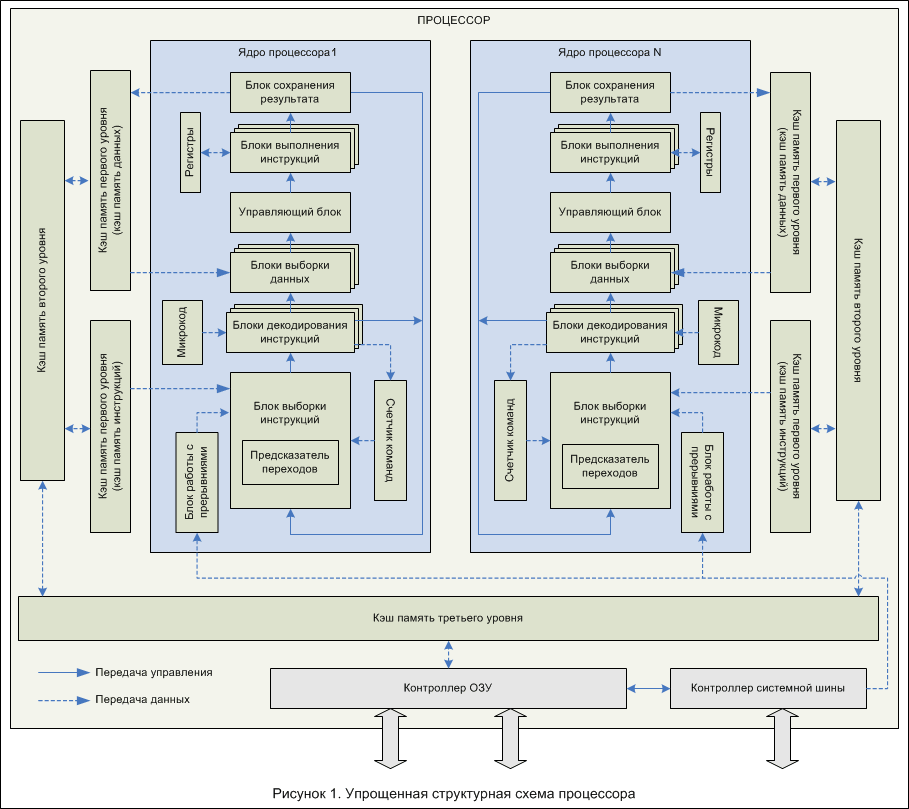

|
|
Введение

Большинство современных процессоров состоит из:
- одного или нескольких ядер, осуществляющих выполнение всех инструкций;
- нескольких уровней КЭШ-памяти (обычно, 2 или три уровня), ускоряющих взаимодействие процессора с ОЗУ;
- контроллера ОЗУ;
- контроллера системной шины (DMI, QPI, HT и т.д.);
И характеризуется следующими параметрами:
- типом микроархитектуры;
- тактовой частотой;
- набором выполняемых команд;
- количеством уровней КЭШ-памяти и их объемом;
- типом и скоростью системной шины;
- размерами обрабатываемых слов;
- наличием или отсутствием встроенного контроллера памяти;
- типом поддерживаемой оперативной памяти;
- объемом адресуемой памяти;
- наличием или отсутствием встроенного графического ядра;
- энергопотреблением.
Упрощенная структурная схема современного многоядерного процессора представлена на рисунке 1.
Ядро процессора
Ядро процессора – это его основная часть, содержащая все функциональные блоки и осуществляющая выполнение всех логических и арифметических операций. Как видно на рисунке, каждое ядро процессора состоит из нескольких функциональных блоков:
- блока выборки инструкций;
- блоков декодирования инструкций;
- блоков выборки данных;
- управляющего блока;
- блоков выполнения инструкций;
- блоков сохранения результатов;
- блока работы с прерываниями;
- ПЗУ, содержащего микрокод;
- набора регистров;
- счетчика команд.
Блок выборки инструкций осуществляет считывание инструкций по адресу, указанному в счетчике команд. Обычно, за такт он считывает несколько инструкций. Количество считываемых инструкций обусловлено количеством блоков декодирования, так как необходимо на каждом такте работы максимально загрузить блоки декодирования. Для того чтобы блок выборки инструкций работал оптимально, в ядре процессора имеется предсказатель переходов.
Блоки декодирования, как понятно из названия, – это блоки, которые занимаются декодированием инструкций, т.е. определяют, что надо сделать процессору, и какие дополнительные данные нужны для выполнения инструкции. Задача эта для большинства современных коммерческих процессоров, построенных на базе концепции CISC, – очень сложная. Дело в том, что длина инструкций и количество операндов – нефиксированные, и это сильно усложняет жизнь разработчикам процессоров и делает процесс декодирования нетривиальной задачей.
Блоки выборки данных осуществляют выборку данных из КЭШ-памяти или ОЗУ, необходимых для выполнения текущих инструкций. Обычно, каждое процессорное ядро содержит несколько блоков выборки данных. Например, в процессорах Intel Core используется по два блока выборки данных для каждого ядра.
Управляющий блок на основании декодированных инструкций управляет работой блоков выполнения инструкций, распределяет нагрузку между ними, обеспечивает своевременное и верное выполнение инструкций. Это один из наиболее важных блоков ядра процессора.
Блоки выполнения инструкций включают в себя несколько разнотипных блоков:
- ALU – арифметическое логическое устройство;
- FPU – устройство по выполнению операций с плавающей точкой;
- MMX (Multimedia Extensions) – набор инструкций, разработанный компанией Intel, для ускорения кодирования и декодирования потоковых аудио и видео-данных;
- SSE (Streaming SIMD Extensions) – набор инструкций, разработанный компанией Intel, для выполнения одной и той же последовательности операций над множеством данных с распараллеливанием вычислительного процесса.
- ATA (Application Targeted Accelerator) – набор инструкций, разработанный компанией Intel, для ускорения работы специализированного программного обеспечения и снижения энергопотребления при работе с такими программами.
- 3DNow – набор инструкций, разработанный компанией AMD, для расширения возможностей набора инструкций MMX;
- AES (Advanced Encryption Standard) – набор инструкций, разработанный компанией Intel, для ускорения работы приложений, использующих шифрование данных по одноименному алгоритму.
Регистры – сверхбыстрая оперативная память (доступ к регистрам в несколько раз бы
стрее доступа к КЭШ-памяти) небольшого объема (несколько сотен байт), входящая в состав процессора, для вр
еменного хранения промежуточных результатов выполнения инструкций. Регистры процессора делятся на два типа:
регистры общего назначения и специальные регистры.
- Регистры общего назначения используются при выполнении арифметических и логических операций, или специфических операций дополнительных наборов инструкций (MMX, SSE и т.д.).
- Регистры специального назначения содержат системные данные, необходимые для работы процессора. К таким регистрам относятся, например, регистры управления, регистры системных адресов, регистры отладки и т.д. Доступ к этим регистрам жестко регламентирован.
Принцип работы ядра процессора основан на цикле, описанном еще Джоном фон Нейманом в 1946 году. В упрощенном виде этапы цикла работы ядра процессора можно представить следующим образом:
- Блок выборки инструкций проверяет наличие прерываний. Если прерывание есть, то данные регистров и счетчика команд заносятся в стек, а в счетчик команд заносится адрес команды обработчика прерываний. По окончанию работы функции обработки прерываний, данные из стека будут восстановлены;
- Блок выборки инструкций из счетчика команд считывает адрес команды, предназначенной для выполнения. По этому адресу из КЭШ-памяти или ОЗУ считывается команда. Полученные данные передаются в блок декодирования;
- Блок декодирования команд расшифровывает команду, при необходимости используя для интерпретации команды записанный в ПЗУ микрокод. Если это команда перехода, то в счетчик команд записывается адрес перехода и управление передается в блок выборки инструкций (пункт 1), иначе счетчик команд увеличивается на размер команды (для процессора с длинной команды 32 бита – на 4) и передает управление в блок выборки данных;
- Блок выборки данных считывает из КЭШ-памяти или ОЗУ требуемые для выполнения команды данные и передает управление планировщику;
- Управляющий блок определяет, какому блоку выполнения инструкций обработать текущую задачу, и передает управление этому блоку;
- Блоки выполнения инструкций выполняют требуемые командой действия и передают управление блоку сохранения результатов;
- При необходимости сохранения результатов в ОЗУ, блок сохранения результатов выполняет требуемые для этого действия и передает управление блоку выборки инструкций (пункт 1).
Описанный выше цикл называется процессом (именно поэтому процессор называется процессором). Последовательность выполняемых команд называется программой.
|